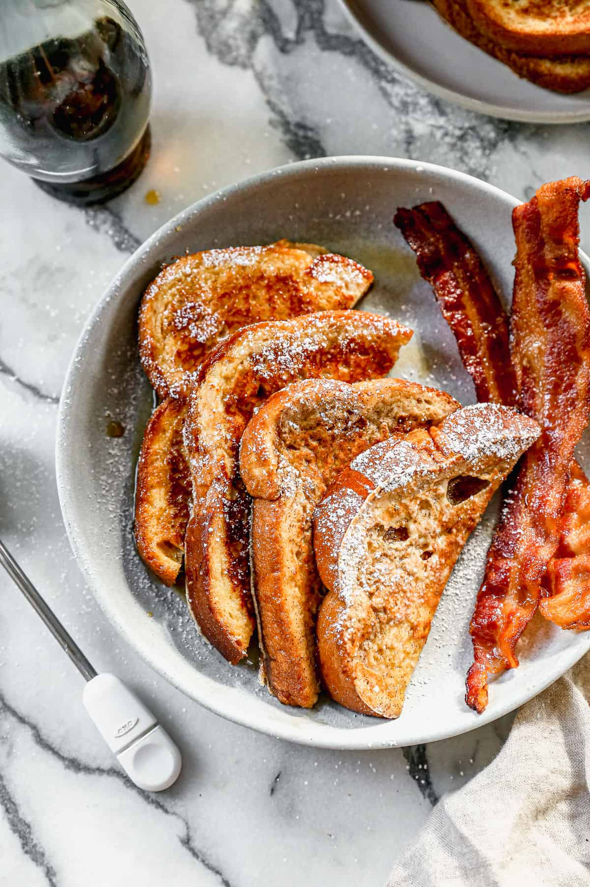
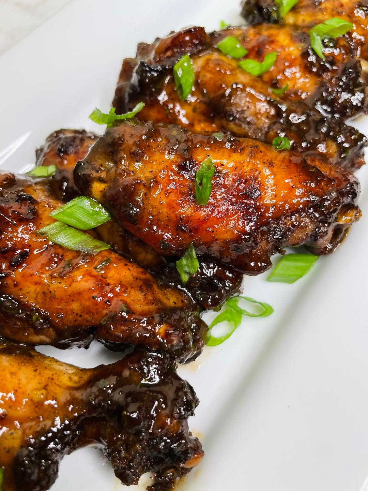

The Starving Artist Cookbook
Birria Tacos
Total Time 4hr 35m
Make 4hr 20m
Author Isabel

INGREDIENTS
- Dried chiles: You need guajillo chiles, ancho chiles, and arbol chiles. You can
find them in the international foods aisle of your local grocery store or at all
Hispanic grocery stores. If you can’t find them in your area, buying them online
is always a great option. If you’ve never worked with dried chiles before, I’ve got
your back. Step by step instructions are in the recipe card below. You can also read
this detailed birria post for more.
- Spices and bay leaves: I used a combination of garlic, cumin, ground clove, Mexican oregano,
Mexican cinnamon stick (also called Ceylon cinnamon), black peppercorns, and 3 bay leaves. If
you don’t have Mexican oregano, you can use regular oregano. If you can’t find Mexican cinnamon
sticks (they’re the brittle kind that you can easily break in half), you can use 2 teaspoons
of ground cinnamon.
- Meat: I used a beef chuck roast to make my birria. It’s got a great fat-to-meat ratio and
creates the perfect layer of fat needed to fry the tortillas to make birria tacos. Birria is traditionally made
with goat or lamb meat, but that’s not readily available where I live, so I opted for beef. Other options
also include short ribs, beef shanks, and oxtail for added flavor.
- Corn tortillas: Corn tortillas that you can get just about at any grocery store are perfect! Of course,
you can always make your own homemade corn tortillas if you’re feeling fancy.
- Shredded cheese: Traditional Mexican melting cheeses like Oaxacan (quesillo), Chihuahua, and Asadero are the
best options, but you could also use Monterey Jack or Mozzarella if you can’t find those near you.
- Cilantro, diced white onions, and lime wedges: Must-have toppings that pair perfectly
with the rich and fatty birria!
DIRECTIONS
- Make the birria. Season and sear the meat on both sides. Then soak the chiles, blend
them until smooth, and strain the sauce into a pot with the seared meat. Bring everything
to a boil, then turn the heat to low, cover, and cook for 3-3 ½ hours until the meat
is fall-apart tender. Take the meat out and shred it with two forks.
- Dip both sides of a corn tortilla in the layer of fat that sits on top of the
pot of birria. Try to only dip into this top layer and not further down into the
red broth or consomé.
- Fry the tortilla in a large skillet over medium-high heat. It should begin bubbling
immediately. Top half of the tortilla with a generous amount of shredded cheese and
shredded birria meat.
- Fold the other half of the tortilla over to create a taco, and cook for 1 minute on
each side until the cheese has fully melted and the tortillas have crisped up.
French Toast
Total Time 15m
Make 10m
Author Lauren Allen

INGREDIENTS
- 4 large eggs
- 2/3 cup milk
- 1/4 cup all-purpose flour
- 1/4 cup granulated sugar
- 1/4 teaspoon salt
- 1 teaspoon ground cinnamon
- 1 teaspoon vanilla extract
- 8 thick slices bread
DIRECTIONS
- Preheat griddle to 350 degrees F or or heat
a skillet over medium heat.
- Add all ingredients, except the bread, to a
blender or if using a shallow dish and whisking
by hand, mix flour and eggs first then add
remaining batter ingredients.
- Dip bread slices into the batter, dredging them
well on both sides, and place on hot, greased
griddle or skillet.
- Cook for a few minutes, until the bottom of
the breads starts to get golden brown. Flip
and cook on the other side the same.
- Remove to a plate. Serve warm with syrup
and a sprinkle of powdered sugar.
Jerk Wings
Total Time 1hr
Make 50m
Author Danielle Dunn

INGREDIENTS
- 3 - 4 lbs. chicken wings
- 1 1/2 tsp. seasoned salt
- 1 tsp. garlic powder
- 1 tsp. onion powder
- 2 tbsp. jerk seasoning I use Grace's or Walker's Wood
- 1 tbsp. brown sugar
Jerk Sauce
- 4 tbsp. unsalted butter
- 1/3 cup ketchup
- 1 tbsp honey
- 2 tbsp. brown sugar
- 1/4 cup jerk seasoning
- 1/4 cup apple cider vinegar
- 1 tbsp. parsley
DIRECTIONS
- Preheat oven to 400 degrees. If using whole wings, separate
the drum from the flat using a knife.
- In a large bowl, season chicken wings with seasoned salt,
onion powder, garlic powder, jerk seasoning and brown sugar.
Use hand or large spatula to make sure all wings are coated.
- Place chicken wings on a parchment or foiled lined baking sheet.
You can also lined the baking sheet with foil, and place an oven
safe baking rack on top, and place the wings on the baking rack. Cook
in preheated oven for 45 minutes.
- Heat a skillet over medium low or medium heat. Add butter, ketchup,
honey, brown sugar, apple cider vinegar and jerk seasoning. Mix
together and bring to a simmer, Simmer for 2 minutes, while stirring.
- Add wings to large bowl, along with sauce mixture. Toss until all wings
are coated. Serve immediately with ranch or dressing of choice.